InnovaSalud · Takeda / IPOPI-LASID · 2026
Storyboard de Producción — 18 planos con fotografías reales
📸 Material Real de ProducciónBauty chico — River, fútbol, dibujos, la calle · Planos 1–4
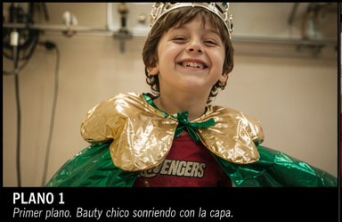
Primer plano. La sonrisa de Bautista antes de que la enfermedad definiera su historia. Capa de superhéroe, remera de Avengers — un chico que todavía cree que es invencible.
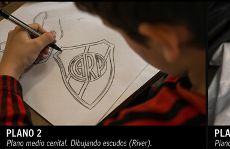
Plano medio cenital. Las manos de Bauty dibujando el escudo de River Plate — su pasión, su identidad, lo que nunca le pudieron sacar.
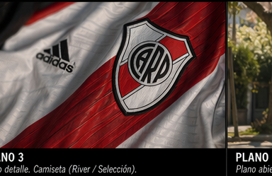
Plano detalle. La camiseta como símbolo de normalidad — lo que cualquier chico argentino tiene. Lo que Bauty nunca dejó de ser.
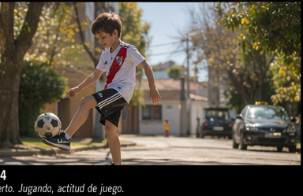
Plano abierto. Bauty con la camiseta de River dominando la pelota en la vereda. La vida normal de un chico argentino. La vida que casi no fue.
"El primer grito fue suficiente para saber que estaba vivo. No fue suficiente para saber que iba a seguir estando."Juanma — [REAL]
Internación, catéter, techo hospitalario, soledad · Planos 5–10
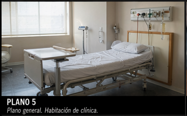
Plano general. La cama vacía que espera. La habitación de hospital que Bauty conocía mejor que su propia pieza. Cada dos meses, el mismo lugar.
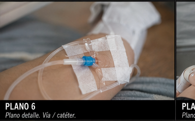
Plano detalle. La vía intravenosa — 10 a 14 horas de infusión. Las venas que reventaban. "Eso fue de lo peor que nos pasó después del temor a la muerte."
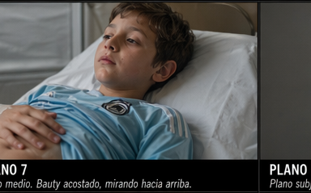
Plano medio. Bauty acostado en la cama de hospital, mirando al techo. La mirada de un chico que sabe que tiene que esperar. Camiseta celeste, no la de River.
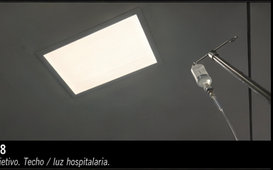
Plano subjetivo. Lo que Bauty ve acostado durante 14 horas. El techo fluorescente, el soporte de suero. El POV de la inmovilización.
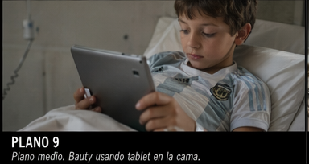
Plano medio. Bauty con la tablet — el escape digital durante las internaciones. La normalidad improvisada dentro del hospital.
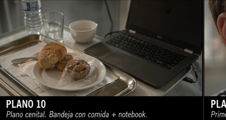
Plano cenital. La vida hospitalaria condensada: la bandeja de comida institucional al lado de la notebook. Los días que se acumulan sin que nadie te diga cuándo te vas.
"Vos sos malo."Bautista, 4 años — a su papá durante el IVIG · [REAL]
Recuperación, concentración, fútbol, la mirada a cámara · Planos 11–16
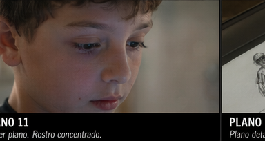
Primer plano. La cara de Bauty actual — concentrado, presente. Ya no mira al techo de un hospital. Mira hacia adelante.
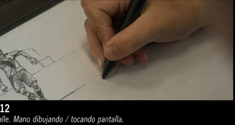
Plano detalle. La mano que antes tenía vías intravenosas ahora dibuja. La misma mano, otro contexto. La creatividad como resistencia.
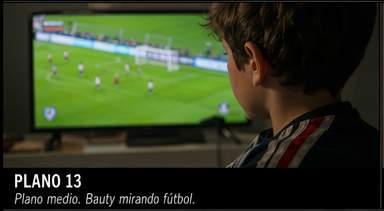
Plano medio. Bauty mirando un partido de fútbol en la tele. Lo que no pudo hacer durante años de internaciones. La normalidad reconquistada.
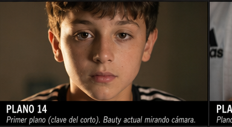
Primer plano — EL plano clave del corto. Bauty mira directamente a la cámara. Ya no es el nene que miraba al techo del hospital. Es el adolescente que sobrevivió. La mirada que dice: "Estoy acá."
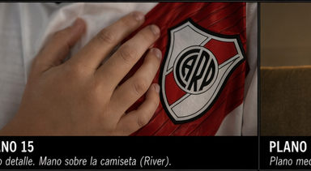
Plano detalle. La mano de Bauty sobre el escudo de River. La identidad que lo atravesó todo — hospital, pandemia, IVIG. River siempre estuvo.
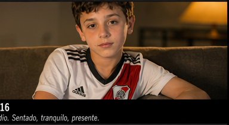
Plano medio. Bauty sentado en su casa con la camiseta de River. Tranquilo. Presente. Sin máquinas, sin sueros, sin techo de hospital. Solo un chico en su casa.
"No tengo palabras para describir cómo nos cambió a todos la vida. Las torturas se terminaron."Juanma — [REAL]
"No se trata de cuántas veces te caés... sino de cuántas veces elegís seguir jugando."